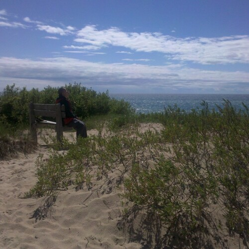

The Adventurer

The Adventurer
To slowly turn your life, into Art,
small, is the best way to start.
Small means but tiny discomfort,
at first, make your adventures very short.
You don't have to go out, all the way,
let the sky, mountains, and sea invite you out to play.
And the call rarely ever comes from something big,
it will be more like a fragrant breeze, or muddy shoes, or the snap of a twig.
Before you know it, you'll be packing up for Nordhouse Dunes,
hoping to be the first to greet all the Fancy Raccoons.